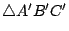
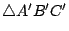
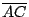
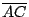

在平面幾何的範疇來說，平面對于其上每一條直線皆成反射對稱。用現代的術語來說，平面 Π 上對于直線  的反射對稱是一個從 Π 到 Π 的映射（亦稱為變換）
，它把 的點固定不動，把不在 的點如 P 點映射到 P' 點使得 的反射對稱是一個從 Π 到 Π 的映射（亦稱為變換）
，它把 的點固定不動，把不在 的點如 P 點映射到 P' 點使得
 和 正交于
的中點，如 [圖0-3] 所示。 和 正交于
的中點，如 [圖0-3] 所示。
[ 圖0-3 ]
假如把一張紙想成是平面的局部，則在上述反射對稱
 之下相互對應的點 P, P' 也就是把紙張沿 折摺時相互疊合者。而二個相互疊合的直線段（或角區）則顯然是等長（或等角）的。由此可見這種反射對稱乃是一種保長、保角的變換。
[註]：古希臘的幾何學家肯定是認識到上述反射對稱性及其保長保角性的。也許他們認為這種描述還不夠初等，所以他們改用下述三條疊合公理來描述空間對稱性這種本質。
之下相互對應的點 P, P' 也就是把紙張沿 折摺時相互疊合者。而二個相互疊合的直線段（或角區）則顯然是等長（或等角）的。由此可見這種反射對稱乃是一種保長、保角的變換。
[註]：古希臘的幾何學家肯定是認識到上述反射對稱性及其保長保角性的。也許他們認為這種描述還不夠初等，所以他們改用下述三條疊合公理來描述空間對稱性這種本質。
- 直線段的疊合公理：設
 是一個給定直線段，P 是給定直線上一個給定點。則在 P 的兩側各有唯一一點 Q, Q' 使得 和 是一個給定直線段，P 是給定直線上一個給定點。則在 P 的兩側各有唯一一點 Q, Q' 使得 和
 ,
能夠疊合，亦即等長。 ,
能夠疊合，亦即等長。
[ 圖0-4 ]
- 角區的疊合公理：設 是一個給定角，
是一個給定射線，則在直線 PQ 的兩側各有唯一的射線
和
，使得 和 或 能夠疊合，亦即等角。
[ 圖0-5 ]
- 三角形的疊合公理：兩個三角形
 和

能夠相互疊合（亦稱之為全等）的充要條件是它有相應的兩邊及其夾角 (S.A.S.) 能夠彼此疊合（亦即對應等長和等角）。 和

能夠相互疊合（亦稱之為全等）的充要條件是它有相應的兩邊及其夾角 (S.A.S.) 能夠彼此疊合（亦即對應等長和等角）。
[ 圖0-6 ]
例如
和
之間有
和
 等長，
 和 等長，
 和
 等長，而且 等長，而且  和 等角；則必有 和 等角；則必有
 和
等長， 和
等長， 和 等角和
和 等角。 和 等角和
和 等角。
[註]：上述三條疊合公理之中，第一條和第二條其實是用來確立等長和等角這兩個基本概念，而第三條才是真正的反映著空間對稱性這種本質。再者，他們用上述公理推導的第一個定理就是等腰三角形
（即 和 等長）是對于其頂角平分線成反射對稱的，然後以等腰三角形為工具去探索空間對稱性各種各樣廣泛而且深遠的影響。
|